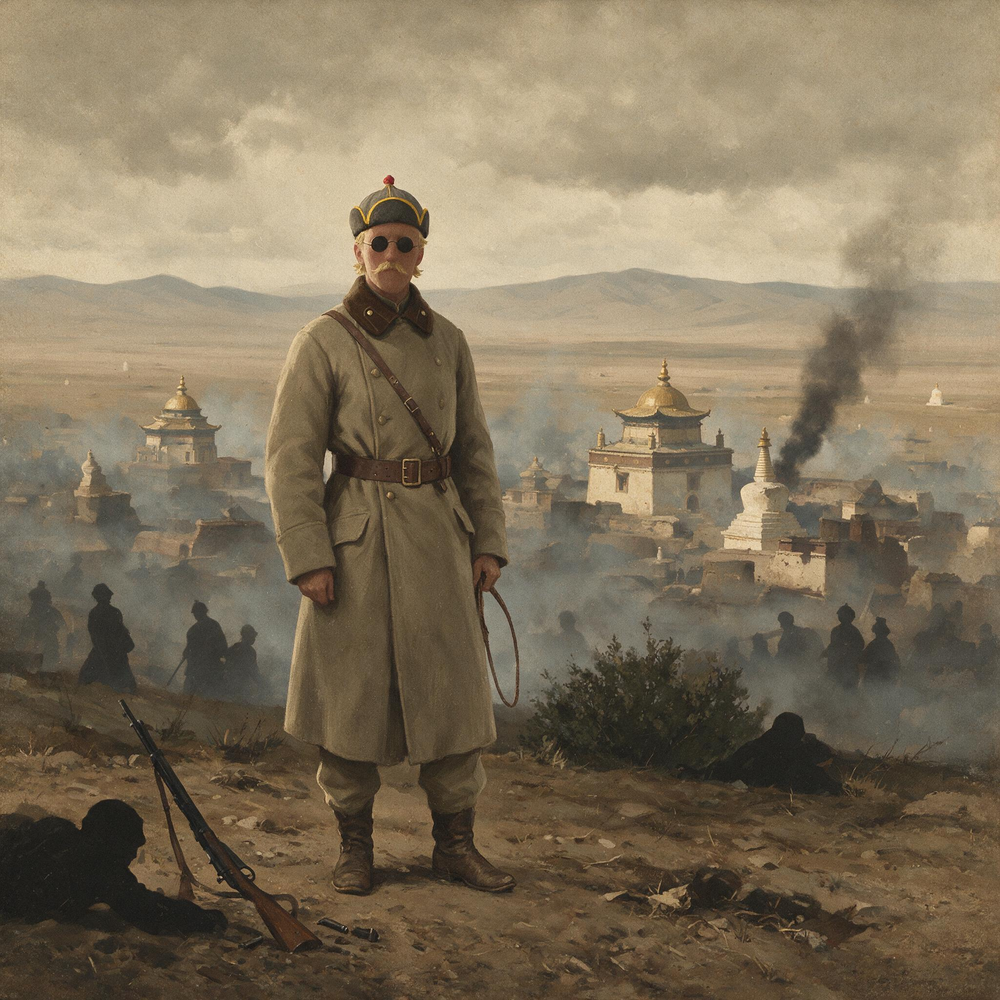

第 11 章
恩琴攻陷库伦
库伦北面的边境巡逻队回来时，带回的不是敌人踪迹，而是一句话：雪地上有宿营的痕迹，人已离去，方向不明。
此后数周，“方向不明”成了库伦军事情报中最常见的字眼。哨卡继续上报零散消息，有时是牧民说遇到骑手，有时是商队被迫留下牲口，但这些消息彼此没有关联。守军参谋在地图上找不到一条清晰的推进线，敌人的规模和意图仍然藏在雪原后面。
当这支从北方而来的队伍终于出现在库伦城外，城内守军才把此前的零散报告与眼前的现实拼在一起。
问题不在情报来得太晚，而在于库伦早已丧失了做出回应的能力。城门口的士兵拦不住溃退的民夫，军需官拿不出饷银，调度室找不到一匹还能长距离奔袭的战马。城墙上的守兵看得见远处移动的队列，却听不到任何增援的动静。
库伦军政机关在1921年年初已处于半瘫痪状态。库伦都护使陈毅与驻军长官联名致电北京，先谈的不是军事，而是饷项。电文说，驻军欠饷多时，士兵每日仅得粗粮，战马草料不继，枪械零件无从补充。
陈毅在另一封呈文中措辞更为直接：库伦防务“所需者非空言，乃饷与弹也”。但此后数周，北京既无饷银启运的消息，也无增兵北上的部署。
库伦的地理位置决定了它无法靠本地财政维持一支足以自卫的军队，一旦中央的供给线中断，守军的瓦解就只是时间问题。
此时，罗曼·冯·恩琴男爵所率的部队已经从外蒙古北部南下。这支武装的名号并不统一，有时被称为“亚洲骑兵师”，有时被记为“恩琴部”或“白俄匪股”。其人员构成混杂，包括俄国白军残部、布里亚特蒙古人和少量日本顾问。
关于这支部队的总数，当时的中国官方电报中对它的估算常有出入，有时称“数千”，有时称“万余”，悬殊的数字恰恰说明北京和库伦对来敌几乎没有可靠情报。
更需指出的是，恩琴部并非得到某个大国正式支持的军队，而是一支被俄国革命抛出原有秩序、在边境地带自行聚集的流亡力量。它的补给来自沿途征发，它的行动不受任何政府节制。
正是在这种背景下，一支并不庞大的武装敢于沿外蒙北部南下，直至逼近库伦。
外蒙北部通道的失控由来已久。自1917年俄国革命后，沙俄在外蒙古的官方机构逐渐瘫痪，俄国旧军人与流亡者在西伯利亚、外蒙边境一带游荡。苏俄忙于内战，无力对这一地区进行有效控制。外蒙古北部由此出现一个既不属于北京、也不属于莫斯科的灰色地带。走私、劫掠和武装跨境成为常态。
更关键的是，外蒙古王公已因对徐树铮强行改革的不满，开始向外寻求援助，将中国军队视为“侵略者”，这为外部力量介入提供了内应。
直皖战争的爆发把这种脆弱秩序连根拔起。徐树铮率部回内地参战，战败后遭通缉，逃入日本使馆，外蒙古官兵一时间失去了统一的指挥和可靠的后援。直系控制北京后，对蒙古问题的态度趋于冷淡，因为关内的政治与军事斗争远比边疆防务更直接地影响其政权存续。
财政枯竭进一步压缩了库伦守军的行动空间。北洋政府多年积欠外债，直皖战争后又要筹措军费，外蒙古的防务经费被排在极不优先的位置。
守在库伦的士兵已有“两月未发饷”，步枪因缺乏零件而无法维修，弹药储备不足一次防御作战所需。这些情况与北京财政部的公文相互印证，库伦守军确实既无钱，也无弹。
当一支军队连日常训练都难以为继时，很难指望它去抵抗一支来去如风的骑兵。
恩琴部的进军路线并非秘密。他们从外蒙北部南下，沿途经过的旗地大多没有力量抵抗，有些王公旗官在武力面前只能选择放行或提供草料。
外蒙地方此前因徐树铮的强行改革而积累的矛盾，在此时显出后果。当地贵族和寺院对北京的不满，使他们在白俄武装入境时倾向于观望，甚至内应，而不是向库伦报警或组织民团协助守军。库伦的孤立，不只是地理上的，也是政治上的。
库伦城内，陈毅主持的留守机关试图组织防御，但可供调动的兵力有限。原有驻军一部已随徐树铮内撤，留下的士兵士气低落。城内还有若干中国商号，在风声吃紧时只能闭门自保。
库伦都护使署连续向北京发电求援，其中一份措辞尤为紧迫。电文称“恩琴匪股数千，已迫近库伦，情形万分紧急”，紧接着说明“守城官兵两月未发饷，械弹两缺，势难久持”，恳请北京“速拨饷械，并派兵驰援”。这份求援电报后来成为查考库伦失守前夕状况的重要文献。
电文中的“匪股数千”不一定是实数，但“两月未发饷”与“械弹两缺”却被后出的多项材料所印证。
它表明库伦失守的直接原因并非敌人强大，而是守军已失去继续战斗的基本条件。
北京方面的反应迟缓而混乱。直奉之间的紧张关系已经浮上水面，北京政府更关心的是谁掌握兵权，而不是蒙古的存废。陆军部收到库伦求援电后，曾开会讨论，但与会者未能就派兵问题拿出具体方案。有人提出由察哈尔或其他邻近地区调兵驰援，但调兵需要军费，而财政部表示无款可拨。还有人主张通过外交途径向苏俄方面提出交涉，请苏俄约束白俄越境，但北京与莫斯科之间的外交关系尚未稳定，交涉渠道并不通畅。求援电报在各部门之间流转，库伦却等不到任何实质性的援军。
恩琴部在1921年2月完成对库伦的包围。守军进行了短暂抵抗，但很快便失去组织。由于弹药不足，部分士兵只能用刺刀和枪托应付进攻。
城防在几个时辰内被突破，中国守军撤出库伦。陈毅等军政人员退往买卖城方向。库伦街头随即被白俄骑兵控制。
恩琴部进入城市后，贴出布告，宣布接管秩序。布告的具体文本因来源不同而存在差异，但其核心内容一致：要求居民保持平静，禁止携带武器，并宣称驱逐“中国官僚”。至于外蒙古的“独立”或“自治”问题，恩琴本人并非外蒙内部主张的代表，他的公告更多是军事占领者的命令，而非政治纲领。
随后在仓促中，以其扶植的八世哲布尊丹巴为领袖，宣布“大蒙古国”政府重新成立。
库伦失守的消息传到北京，所引发的更多是舆论震动，而不是军事上的紧迫反应。政府发言人在答记者问时，仍然使用“库伦为我领土”“相机收复”等措辞，但没有给出明确的时间表。
一份内务部转给外交部的签呈中写道，库伦失守影响边疆全局，但“当此中央多事，军政费无所出，收复之计，尚待统筹”。所谓“统筹”，在当时的语境下往往意味着搁置。对外蒙的主权宣示与对库伦的实际失控，就这样同时出现在同一批文件里。
恩琴攻陷库伦的军事胜利，其实是一次对空转机制的打击。库伦守军之所以迅速败退，不是因为战斗意志崩溃，而是因为支撑战斗的财政、补给和指挥链条已经先行断裂。从三个方面可以看出这种结构性的瓦解。
首先是驻军系统内部的削弱。皖系在直皖战争中失败后，库伦驻军失去了派系后台，也失去了统一的指挥核心。军队不是由中央直接部署的国防力量，而是由徐树铮以西北筹边使身份带入的武装。徐树铮一旦离开，这支武装在政治和财政上都成了没有着落的悬军。北京政府既没有另行派人接管，也没有给留守人员明确的身份和权限。库伦的防务，因此从一种个人化的军事安排，沦为无人负责的临时留守。
其次是库伦当局在对外联络上的孤立。外蒙地方原本依靠北京在名义上的中央权威来维持秩序，但在直皖战争之后，北京政权更迭频繁，对蒙政策失去连贯性。库伦军政机关的电报依然发往北京，但北京各部门之间的协调已经失灵。陆军部、财政部、蒙藏院、外交部各有说法，彼此之间却无统一的处置方案。
库伦发回的求援电文，实际上进入了一个半封闭的官僚循环，没有任何一个机关有权力单独作出决定。北京对外蒙的控制，在制度层面表现为一种多部门分管的格局，而在危机时刻，这种格局立刻暴露为无人统筹、无人负责的尴尬。
再次是外蒙古北部的军事真空。沙俄崩溃后，外蒙北部漫长的边境地带长期没有有效的政府力量。苏俄红军忙于西线和内务，无力控制西伯利亚南部与蒙古接壤地区。白俄残部在边境地带游走，既不受莫斯科指挥，也不受任何常规军队纪律约束。
恩琴部正是利用了这种真空，从外蒙北部一路南下，几乎没有遇到有组织的抵抗。它面对的并不是一条有哨卡、有增援、有统一指挥的防线，而是一片由孤城、荒道和失效信息构成的空白区。
这三重机制叠加在一起，使库伦的失守看起来像是一次突然袭击，实际上却是多重失败缓慢积累后的必然结果。
恩琴占领库伦后，外蒙古其他地区的形势迅速恶化。乌里雅苏台等地出现武装滋扰，交通断绝，商路不通，地方旗官无力维持治安。
外蒙王公和寺院势力面对新的暴力现实，不得不作出表态。一些王公选择与恩琴保持接触，以换取本地免遭劫掠；另一些则继续观望，看北京是否还会有所动作。寺院方面同样面临选择。
库伦的哲布尊丹巴活佛此时已经年老，其在政治上的实际影响力有限，但名义上仍是外蒙精神与世俗权力体系的中心。
恩琴部的到来，使外蒙上层出现新的一轮分化。那些在徐树铮时期被迫让步的贵族，此时看到了改变局面的机会；而那些担心白俄军纪败坏、来去无定的人，则宁愿继续承认北京，以避免局势彻底失控。
北京方面并非全无行动。政府曾密令邻近各省筹议“规复库伦”办法。奉系控制着东北与热河一带，在地理上最接近外蒙东部，但张作霖对此事并不热心。他与直系争夺北京控制的斗争正在升温，不愿在蒙古方向投入本可用来经略关内的兵力。奉军与直军的相互戒备，使任何跨省协调都难以实现。
这样一来，外蒙古方向就出现了极为荒诞的局面：北京一面以中央政府名义宣示对外蒙的主权，一面又无力让任何一个实力派去执行收复计划。法理立场仍在，执行链条却已经断裂。
库伦失守的新闻在关内报纸上引起短暂关注。一些评论认为白俄武装入境是苏俄内乱的外溢，属边境治安问题；
另一些则把矛头指向北京政府对边疆的漠视。但舆论热度没有持续太久。
对当时的大多数政治人物而言，关内的权力再分配比外蒙古的得失更切身。外蒙古的空间距离和话题距离都使它容易被搁置。北京政府中并非没有意识到这个问题的严重性，但意识到问题与有能力解决问题之间，隔着一条直奉对峙的深谷。
从制度机制上看，恩琴攻陷库伦暴露了北洋边疆控制模式的根本弱点。这种模式依赖一个强势的地方主官和一支能够独立行动的力量。徐树铮在时，库伦尚可维持；徐树铮一倒，整个架构立即失重。
中央与边疆之间没有建立起不依赖个人、不依赖派系的地方防卫体系。财政上，外蒙古的驻军费用依赖中央拨款，而中央财政早已在军阀纷争中支离破碎。外蒙古地方既无财力自保，也未被赋予足够的武装自治能力。法律上，北京仍然宣示宗主权，但事实上的保护责任却无人承担。
正是这些结构性的空缺，使恩琴这样一支流亡武装得以撕开外蒙古的防线。恩琴占领库伦并不是一场大战的胜利。
真正被击败的，不是一支勇敢守卫的驻军，而是一套已经空转的控制机制。
库伦守军的抵抗之所以短暂，不是因为士兵缺乏战斗意志，而是因为他们在战斗开始之前就已经被欠饷、缺弹和没有援军的现实所压垮。外蒙王公与寺院之所以迟迟不组织有力抵抗，也不是因为他们天然倾向白俄，而是因为他们长期以来从北京得到的信号就是忽冷忽热、难以为继。
恩琴事件的意义恰恰在于此：它证明中国对外蒙的事实保护已经下降到无力阻止一支流亡武装的地步。
恩琴部进入库伦后的日子，城市秩序并未恢复平静。白俄部队维持着自己的巡逻路线，中国商号依旧关门闭户。外蒙权贵中的一些人开始出入恩琴的临时司令部，试探对方的意图。城外的消息仍然混乱，有的说苏俄红军正在向东推进，有的说中国内地各军正在为直奉问题剑拔弩张。库伦城里的人很难判断，什么样的秩序会在将来重新回到这里。能够确定的只是，旧的秩序已经离开，新的秩序还没有成形。北京政府在外交上的动作更像是在维持体面。
它向驻华公使团提出交涉，要求各国注意白俄“乱军”在外蒙古的活动。外交部同时致电中国驻外使节，要求了解苏俄方面对白俄越境的态度。
这些外交努力没有产生立竿见影的效果。苏俄政府自己尚未完全控制西伯利亚，对白俄残部的追剿正在进行之中。
恩琴部的东进威胁，反而成为苏俄后来介入外蒙古事务的理由。北京的外交文件在当时并未预见到这一点，但局势的推进比文件的流转更快。
外蒙王公和寺院的分化在此时已经无遮无挡地浮上表面。一些贵族不再掩饰对北京军事失败的反感，他们公开与恩琴部往来，甚至向白俄骑兵提供情报和补给。另一些王公则保持沉默，他们既不想得罪白俄，也不想彻底断开与北京的关系。
寺院的立场同样含糊。库伦的喇嘛上层一方面希望维持宗教与地方秩序，另一方面又对任何外部军人的控制心存戒惧。
没有人能单独决定外蒙的方向，但所有人都在等待一个更明确的信号。这种等待本身就是一种政治态度。自庫倫失守后，外蒙古的政治中心不再有共同承认的行政权威。
中国派驻的军政机关已被迫撤出，恩琴的司令部只是军事占领机关，并不承担民政管理。王公和寺院面对的是一个没有共同代表的权力格局，任何表态都成为对内争取地位、对外试探风向的策略性动作。北京政府原有的法定框架虽然还存在，但在库伦已不起作用；
恩琴的武力虽然占据街头，却没有建立起稳定的治理体系。外蒙古的政治秩序进入了一种既非中国管辖、也非独立建国的悬空状态。
恩琴部在库伦的统治带有明显的掠夺性质。部队的给养主要依靠征发，城内的商铺和寺院的库藏都曾被索取过。关于此时库伦商户损失的具体数字，目前材料并不完整，但多份事后的报告中都提到了货物被征用、商路停运、物价飞涨的情况。
白俄部队进入城市后，物资紧缺反而加剧，因为外蒙古北部的商路因战事而中断，从中国内地运往库伦的商品通道也因驻军撤退而停滞。一个原本依赖商贸流通的城市，突然被切断了所有外部的经济命脉。北京方面并不是没有试图重新打开通道。
陆军部和蒙藏院曾讨论过从内地调拨物资支援北部防务，但财政困难使这些讨论停留在草拟阶段。北洋政府的预算早已破绽百出，不要说外蒙前线的军饷，就连京畿地区的治安经费都难以保障。库伦失守后，北京的官僚们更不愿冒险把一个本已破产的财政再向遥远的边疆投掷。正是在这种心态下，北京政府虽然一次次表示要“规复库伦”，却始终没有形成可操作的方案。
外蒙古的失败，因而不仅发生在战场上，也发生在北京各部的衙门里。更深的矛盾在于，直奉战争正在逐渐逼近，它吸收了北京政府几乎全部的注意力。直系与奉系的军队在关内调动频繁，双方的政治人物都把外蒙问题当作关内派系谈判的一个筹码，而不是一个需要立即解决的边疆危机。
张作霖的态度尤其耐人寻味。奉系在名义上奉北京政府之命负责北方防务，但张作霖明白，如果自己把精锐部队投入到外蒙古的冬季荒原上，直系在关内的力量就可能乘虚而入。因此，他对“规复库伦”的命令始终不作实质性回应。
这种决定不是某一个人的犹豫，而是军阀政治下军事资源分配逻辑的必然结果。
外蒙古的局势因此在恩琴的控制下继续恶化。乌里雅苏台方向传来的消息越来越稀少，偶尔抵达库伦的商人说，那里已经出现失控的武装团体，有些旗口已经成为游兵和附近匪众争夺草场和牲畜的战场。库伦的白俄指挥部没有能力也没有意愿去恢复这些地区的秩序。它所能做的，只是维持城内的军事控制，并把一部分人手派往主要商路沿途设卡，以便征收到更多粮食和草料。这样的做法使地方贵族和普通牧民要么逃往边地，要么被迫向白俄缴纳实物。外蒙的基层社会在短短数周内经历了从有限的自治到武装占领的巨大震荡。
中国内地报刊对库伦失守的报道，在热闹一阵后很快冷却。一个重要原因是，读者对边疆事务的兴趣始终不如对关内混战的关注。另一个原因是，北京政府对相关消息的发布并不积极。官方在回应这一事件时，倾向于把它归为“边地匪患”，而不是一次领土控制权的重大丧失。
对北京来说，如果公开承认库伦已被一支流亡武装所占，就意味着承认自身在北方的军事失败。而在一场直奉大战即将打响的当口，任何关于失败的消息都可能成为对手攻击的口实。
但这并不影响事实本身继续发酵。外蒙古北部的军事真空与白俄势力的出现，给了苏俄一个后来涉足外蒙事务的现成理由。苏俄红军在追击白俄残部时，可以把这场战争延展到中国的外蒙古境内。北京政府虽然在巴黎和华盛顿体系下继续主张外蒙古的主权，但它在外蒙古地面上已经没有可以支撑这一主张的军事或行政力量。法理上的宗主权，因此成为一种无人执行的纸面安排。恩琴攻陷库伦，恰恰把这种纸面安排与现实控制之间的落差推到了顶点。

库伦城里的中国居民在占领后选择逃离的不少。商人们变卖所能携带的细软，结队南下，在冰雪中立途跋涉。有人死在路上，有人折返库伦，留下来的人则把希望寄托于北京某一天会派兵回来。但没有确切的消息，也没有确切的日期。
第37号旅次报告被归档在蒙藏院杂件中，抬头不是军情，而是商情。民国十年一月初，库伦中国商会递呈都护使署，称城内银根枯竭，驻军欠饷已数月，市面现洋几近绝迹，驻军士兵以军票向商号赊账遭拒，双方时有口角。商会请求由内地调运铜元与现洋以济市面，并特别注明：若中央不速运饷银，商号将无货可售，兵卒亦无物可食，恐有溃裂之虞。
这份呈文未用“匪”“敌”之类的字眼，却把库伦防线内部最脆弱的一环写得很清楚：军队与市面在互相拖累，两者都已支撑不久。
库伦的防御要靠驻军，而驻军的日常消耗却要依赖库伦本地商业。商业一停，军队立即断炊；军队断炊，城市秩序便无从谈起。这层关联使库伦的防线不只存在于城墙和哨卡上，也存在于商号的门板和账本里。商会催运现洋的请求，因此成了一份不折不扣的军事预警。
北京对此并非没有回应，只是敷衍得厉害。财政部的一份稿簿中保存着一份致蒙藏院的覆函，大意为库伦所请拨发救济市面及军饷各节，已悉。惟值此中央财政奇绌，各机关经费尚多积欠，北边防务款项一时实难照拨，拟由蒙藏院商同陆军部另筹办法。
覆函最后加了一句“事关边圉，自应力为维持”，但全篇没有任何数字，没有拨款日期，也没有指定负责人员。蒙藏院接函后照例转行，陆军部则始终没有提出可执行的“另筹办法”。
库伦方面得到的，只是从上到下一连串的“已悉”“另筹”和“力为维持”。这些字样在公文里循环流转，造不成任何军饷，也补不上任何枪弹。库伦商会被迫接受这个结果，因为所有官方文件都显得重视，却没有任何一份文件带钱抵达。
库伦城外的草原上，风向依然从北方刮来，只是如今已经不再有巡逻队出发去瞭望更远的地方。边境上的空旷还在扩大，而填补这片空旷的，正是那些不再受任何边界约束的武装力量。
从清末到民初，中国对外蒙古的统治一直承受着一种结构性压力，即中央对蒙古的控制程度始终与其在关内的统治强度密切相关，而关内政治又极少给蒙古问题留出足够的空间。徐树铮在1919年撤销外蒙自治，靠的是一支亲信武装和个人权威，这种成功过于依赖一时之强人政治。
随后便因无视当地文化传统而招致强烈民族情绪，引发新一轮独立运动。直皖战争后北京的控制力被掏空，这种依赖被打破，中国在外蒙的存在就迅速退潮。
恩琴攻陷库伦，正是退潮之后的第一次彻底暴露。这次暴露的后果，已经远远超出库伦一城。
外蒙的政治格局不再是北京与王公之间的谈判问题，也不再是自治与宗主之间的法理争议。一支外国流亡武装的出现，标志着外蒙的控制权开始向外部军事力量转移。北京政府没有能力逆转这一进程，因为它连内部军阀之间的均衡都维持不了。库伦的失守，于是成为一个分界线。
此前，外蒙的疏离还有可能通过政治谈判和财政安排来调节；此后，这种调节的工具几乎全部失效。外蒙的未来不再由北京与库伦之间的文件决定，而由哪一支军队能够实际进入这片土地来决定。
北京政府在一份对外声明中仍然宣称，“外蒙古为中国领土，库伦之扰乱乃边地局部之事，政府自有办法，不容他国干涉”。这份声明照旧得到外交部的转发和各地方官署的知照。但在库伦，它成了一张废纸。
白俄骑兵巡行在库伦街头，中国商号的招牌还挂在门前，只是门板已经多日没有打开。这种对比没有出现在任何一份官方档案中，也不需要出现在任何一份档案中。因为真实的控制状态，从来不因一句声明而改变，也不因一份布告而回来。
外蒙古的命运，在恩琴部进入库伦之后，已经不在北京手里。北京所面对的，不再是一个可以谈判的王公政府，而是一个由白俄军人占据的城市和一片正在向外敞开北方的土地。它还能发出的，只是一份又一份措辞得体的电文。